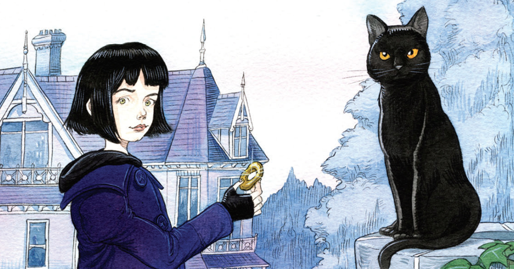
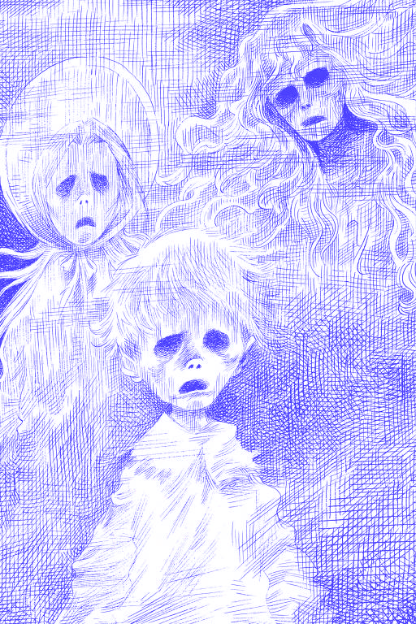
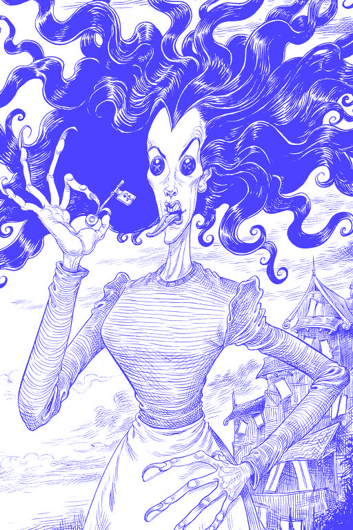

publicado em 2002 pela Bloomsbury.
Neil Gaiman começou a escrever Coraline em 1990, inspirado pela própria filha, Holly. Ele queria criar uma história que explorasse o medo infantil de forma sofisticada, sem subestimar a inteligência das crianças. O livro foi publicado após mais de uma década de refinamento e se tornou um clássico moderno da literatura infantojuvenil.
Neil Richard MacKinnon Gaiman (nascido em 1960) é um escritor britânico renomado por suas obras nos gêneros de fantasia, horror e ficção científica. Além de Coraline, é autor de clássicos como Sandman (quadrinhos), Deuses Americanos, O Oceano no Fim do Caminho e Stardust. Suas obras frequentemente exploram o folclore, mitologia e o sobrenatural no mundo contemporâneo.


Livro infantil de Neil Gaiman ganhou arte do britânico Chris Riddell